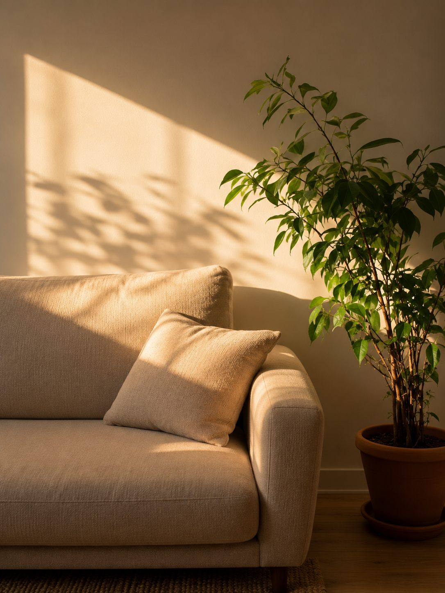

Rihlaturruh
› De reis van de ziel ‹
Een plek voor islamitische reflectie, geestelijke begeleiding, publicaties en zorgvuldig ontwikkelde materialen die bijdragen aan bezinning, betekenis en innerlijke rust.

Wat je hier kunt vinden
Begeleiding
Persoonlijke geestelijke begeleiding vanuit islamitisch perspectief.
Lees meer →Materialen
Werkbladen, posters en digitale hulpmiddelen voor persoonlijk en professioneel gebruik.
Ontdek de materialen →Publicaties
Samenvattingen van scripties, onderzoek en het dashboard van het masteronderzoek.
Bekijk de publicaties →Onze visie
Wij geloven dat geestelijke groei begint wanneer er ruimte ontstaat voor stilte, reflectie en oprechte verbinding met Allah.
Rihlaturruh wil bijdragen aan die reis door kennis, bezinning en praktische hulpmiddelen aan te bieden die mensen ondersteunen in het dagelijks leven, zowel persoonlijk als professioneel.

Rihlaturruh betekent: de reis van de ziel. Een uitnodiging om niet alleen verder te gaan, maar ook stil te staan.
Over Rihlaturruh
Rihlaturruh betekent de reis van de ziel.
Iedere mens bewandelt een eigen weg. Een weg die wordt gekenmerkt door momenten van vreugde en verdriet, hoop en onzekerheid, groei en beproeving. Tijdens deze reis staan we soms stil bij levensvragen, zoeken we naar betekenis of verlangen we naar innerlijke rust en nabijheid tot Allah.
Vanuit die gedachte is Rihlaturruh ontstaan: een plek waar islamitische reflectie en geestelijke verzorging samenkomen.
Het doel is om ruimte te bieden voor bezinning, verdieping en bewust leven, door middel van zorgvuldig ontwikkelde materialen en – in de toekomst – geestelijke begeleiding.

Onze visie
Waar verandering begint
Wij geloven dat ware verandering begint in het hart. Wanneer we bewust leren stilstaan bij onze ervaringen, onze relatie met Allah en onze plaats in het leven, ontstaat ruimte voor innerlijke rust, veerkracht en betekenis.
Daarom ontwikkelt Rihlaturruh zorgvuldig vormgegeven materialen die uitnodigen tot reflectie en bewustwording. Op termijn zal dit worden uitgebreid met islamitische geestelijke begeleiding voor mensen die behoefte hebben aan persoonlijke ondersteuning.
Alles wat binnen Rihlaturruh wordt ontwikkeld, vindt zijn inspiratie in de Koran, de authentieke Soennah en de rijke islamitische traditie van zielzorg (tazkiyat an-nafs).

Voor wie is Rihlaturruh?
Voor iedereen die verdieping zoekt
Rihlaturruh is er voor iedereen die verlangt naar verdieping vanuit een islamitisch perspectief. De materialen zijn geschikt voor:
- persoonlijke reflectie en spirituele ontwikkeling
- islamitische geestelijke verzorging
- onderwijs en educatie
- zorg- en welzijnsinstellingen
- professionals die werken met moslims
Om zoveel mogelijk mensen te bereiken, worden de materialen geleidelijk beschikbaar in meerdere talen, waaronder Nederlands, Turks en – waar passend – Arabisch.

Achter Rihlaturruh
Mijn naam is Havva.
Ik ben islamitisch theoloog en islamitisch geestelijk verzorger.
Mijn academische vorming begon met een bachelor in de islamitische theologie, waarna ik een master Islamitische Geestelijke Verzorging afrondde.
Een bijzonder vormende periode in mijn leven bracht ik door in Al-Madinah al-Munawwarah (Medina). Daar heb ik gewoond, gestudeerd en gewerkt. De nabijheid van de Masjid an-Nabawi, de dagelijkse omgang met kennis en de spirituele omgeving van Medina hebben mijn visie op geloof, zielzorg en geestelijke begeleiding blijvend gevormd.
Die ervaringen vormen vandaag de dag de inspiratie achter Rihlaturruh. Vanuit mijn achtergrond ontwikkel ik materialen die mensen helpen stil te staan bij hun eigen levensreis — materialen die uitnodigen tot reflectie, betekenisgeving en een diepere verbinding met Allah.
Mijn verlangen is dat Rihlaturruh mag uitgroeien tot een plek waar mensen niet alleen kennis opdoen, maar ook rust vinden, hoop hervinden en met meer bewustzijn hun eigen reis van de ziel voortzetten.
Onze kernwaarden
Authentiek
Geworteld in de Koran en de authentieke Soennah.
Diepgaand
Ruimte voor bezinning, reflectie en betekenis.
Toepasbaar
Praktische materialen die aansluiten bij het dagelijks leven.
Professioneel
Ontwikkeld vanuit islamitische theologie en geestelijke verzorging.
Barmhartig
Met aandacht voor de mens achter het verhaal.
Iedere ziel legt haar eigen reis af.
Mijn wens is dat Rihlaturruh een metgezel mag zijn op die reis: een plek waar kennis het hart raakt, waar reflectie leidt tot bewustwording en waar de verbinding met Allah steeds opnieuw mag worden versterkt.
Geestelijke begeleiding
Soms zijn er momenten waarop woorden moeilijk te vinden zijn. Een verlies, een ingrijpende gebeurtenis, geloofsvragen of een periode van innerlijke onrust kunnen maken dat u behoefte heeft aan een gesprek waarin ruimte is voor uw verhaal.
Rihlaturruh biedt geestelijke begeleiding vanuit een islamitisch perspectief, waarbij geloof, levensvragen en persoonlijke ervaringen op een respectvolle en zorgvuldige manier centraal staan.

Waarvoor kunt u terecht?
Zingevings- en levensvragen
Samen stilstaan bij wat u bezighoudt en zoeken naar betekenis.
Geloofsbeleving en spiritualiteit
Versterken van uw relatie met Allah en verdiepen van uw iman.
Persoonlijke ontwikkeling
Werken aan zelfinzicht, groei en het maken van bewuste keuzes.
Omgaan met verlies, ziekte of ingrijpende levensgebeurtenissen
Ruimte voor verdriet, verwerking en het vinden van houvast.
Innerlijke rust en balans
Zoeken naar rust, balans en mentale veerkracht.
Identiteit en levensfase
Vragen rondom wie u bent, waar u staat en waar u naartoe wilt.
Iedere begeleiding is maatwerk en afgestemd op de persoonlijke situatie en hulpvraag.
Werkwijze
Een begeleidingsgesprek biedt een veilige en vertrouwelijke omgeving waarin ruimte is voor gesprek, reflectie en verdieping. Afhankelijk van uw hulpvraag kunnen ook reflectiematerialen of werkbladen van Rihlaturruh worden ingezet ter ondersteuning van het proces.
We maken gebruik van:
- reflectievragen
- islamitische bronnen
- Koranverzen en authentieke ahadith
- reflectiematerialen van Rihlaturruh
- praktische oefeningen
Alles wat we bespreken blijft vertrouwelijk en wordt met respect behandeld.
Over mij
De begeleiding wordt verzorgd door een islamitisch theoloog en islamitisch geestelijk verzorger, met ervaring binnen de geestelijke verzorging en een achtergrond in islamitische theologie.
Vanuit kennis, ervaring en oprechte aandacht is het mijn doel om samen ruimte te creëren voor bezinning, heling en verbinding met Allah.
Talen
Begeleidingsgesprekken kunnen worden aangeboden in:
- Nederlands
- Türkçe
- Arabisch
- English
Een afspraak maken
Wilt u een gesprek aanvragen of heeft u vragen? Neem gerust contact op via het contactformulier of stuur een e-mail. Samen bekijken we welke vorm van begeleiding het beste aansluit bij uw vraag.
Iedere levensreis kent momenten waarop het helpend is om samen stil te staan.
Ik nodig u uit om contact op te nemen. Ik kijk ernaar uit om met u mee te denken.
Materialen
Materialen die uitnodigen tot bezinning
De reflectiematerialen van Rihlaturruh zijn ontwikkeld om ruimte te creëren voor reflectie, bewustwording en betekenisgeving vanuit islamitisch perspectief.
Elke werkvorm is met zorg samengesteld en kan worden gebruikt voor persoonlijke bezinning, tijdens begeleiding of binnen een professionele context.

Wat Rihlaturruh ontwikkelt
Reflectiewerkbladen
Werkvormen die uitnodigen tot zelfreflectie en verdieping.
Posters
Visuele reminders voor inspiratie en bezinning in het dagelijks leven.
E-books
Verdiepende uitgaven over thema’s die raken aan het hart en de ziel.
Digitale hulpmiddelen
Digitale werkbladen, invulbare PDF’s en reflectie-oefeningen voor flexibel gebruik.
Voor persoonlijk én professioneel gebruik
De materialen zijn geschikt voor persoonlijke reflectie en kunnen daarnaast worden ingezet door islamitisch geestelijk verzorgers, docenten, zorgprofessionals en begeleiders die werken met moslims. Afhankelijk van de inhoud zijn ze toepasbaar binnen onderwijs, geestelijke verzorging en de zorg — en worden ze geleidelijk beschikbaar in meerdere talen, waaronder Nederlands en Turks.
Met zorg ontwikkeld
Iedere uitgave is gebaseerd op islamitische bronnen en geschreven met aandacht voor reflectie, toegankelijkheid en praktische toepasbaarheid. Het doel is niet alleen om kennis over te dragen, maar ook om stil te staan bij de vragen, ervaringen en momenten die deel uitmaken van de reis van de ziel. Wij geloven dat reflectie begint met vertragen.
Niet ieder antwoord begint met spreken. Soms begint het met stil durven staan.
Ontdek de materialen
Reflectiematerialen die je ondersteunen op jouw reis van de ziel. Interesse of vroege toegang?
Neem contact opContact
Heeft u een vraag, wilt u meer informatie of bent u benieuwd wat Rihlaturruh voor u of uw organisatie kan betekenen?
U bent van harte welkom om contact op te nemen. Ik neem de tijd om ieder bericht zorgvuldig te lezen en streef ernaar zo spoedig mogelijk te reageren.

Contactgegevens
Contactformulier
Heeft u een vraag of wilt u meer informatie? Vul onderstaand formulier in. Ik neem zo spoedig mogelijk contact met u op.
Samenwerken
Rihlaturruh werkt graag samen met organisaties en professionals die zich inzetten voor zingeving, educatie, geestelijke verzorging en de ontwikkeling van islamitische reflectiematerialen.
Samenwerkingen zijn onder andere mogelijk met:
- zorginstellingen;
- onderwijsinstellingen;
- moskeeën;
- maatschappelijke organisaties;
- islamitische geestelijk verzorgers;
- andere professionals binnen het sociale domein.
Voor samenwerkingen of zakelijke vragen kunt u vrijblijvend contact opnemen.

Iedere ontmoeting begint met een eerste stap.
Ik zie ernaar uit om kennis met u te maken en samen te verkennen wat Rihlaturruh voor u kan betekenen.
Publicaties
Kennis delen, verdieping brengen
Toegankelijke samenvattingen van scripties en onderzoek, en het dashboard van het masteronderzoek — om kennis te delen en bij te dragen aan bezinning, betekenis en bewustwording.
Scriptie-samenvattingen
Heldere, toegankelijke samenvattingen van scripties, gemaakt voor een breder publiek.
Onderzoek
Inzichten en bevindingen uit onderzoek rond geloof, zingeving en geestelijke verzorging.
Dashboard masteronderzoek
Een overzichtelijk dashboard met de resultaten van het masteronderzoek.
Binnenkort beschikbaar
De publicaties en het dashboard worden hier stap voor stap toegevoegd. Heeft u interesse of een vraag? Neem gerust contact op.
Neem contact opKennis raakt pas werkelijk als zij het hart bereikt.